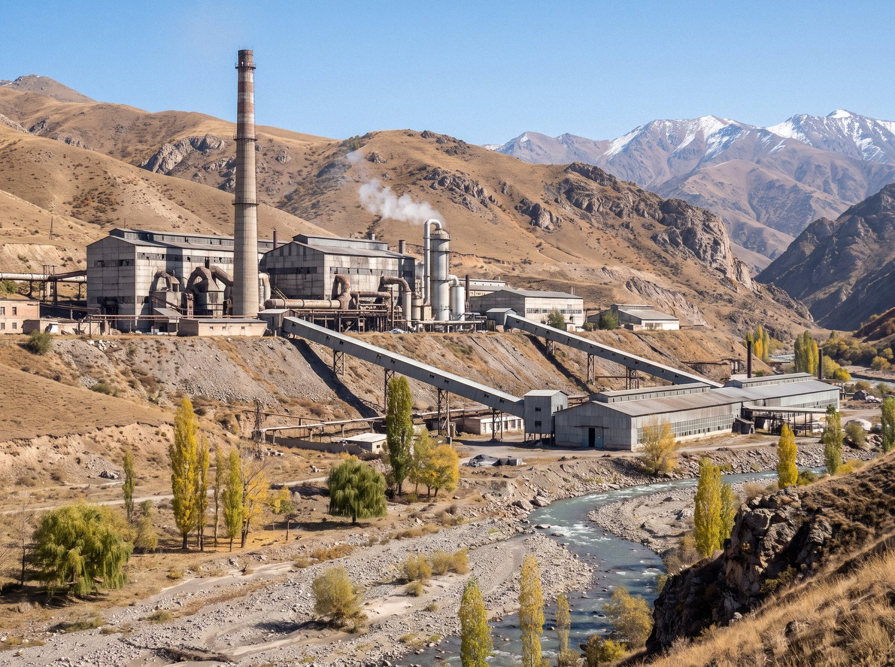

The Chatkal Chemical Smelting Complex converts antimony concentrate into antimony metal and antimony trioxide. It stands at about 1,600 m in the gorge of the Urmaral, the next valley west of Sary-Bulak, about 30 km south-west of Talas and 46 km from the city by the Chatkal smelter road. It was commissioned in 1964 and has been a subsidiary of the Combine since 1994.
Key data
| Item | Details |
|---|---|
| Site area | about 80 ha |
| Rail | Siding of about 6 km from the Sary-Bulak spur to the processing mill |
| Products | Antimony metal ingots, 99.65% Sb; antimony trioxide; bismuth and tellurium; sulphuric acid |
| Output 2025 | 4,600 t antimony metal; 3,100 t antimony trioxide |
| Furnaces | Four reverberatory furnaces, two in operation; No. 3 to be relined in the Restart Programme |
| Employees | about 2,200 |
Processes
- Concentration: the Chatkal Antimony Processing Mill, at the end of the rail siding, treats ore from the satellite mines at Kemer and Kyzyl-Jar by froth flotation.
- Volatilisation roasting: concentrate is heated in air and the antimony escapes as trioxide fume, which is collected in bag filters.
- Reduction smelting: the crude oxide is reduced with coke in reverberatory furnaces and fire-refined with alkaline fluxes to remove arsenic and iron.
- Trioxide production: refined metal is re-volatilised under controlled conditions to make high-purity antimony trioxide.
- By-product recovery: residues and flue dust go to the Chatkal Rare Earth Facility, which recovers bismuth and tellurium. Despite its name, the facility does not process rare-earth ores.
- Mercury recovery: a small unit, idle since 2019, recovered mercury from residues of the cinnabar that occurs with the stibnite. It will be refurbished only after a new operating permit and a public hearing.
Air protection
Since 2016 the complex has installed sulphur dioxide scrubbers, designed under the chief engineer Artem Kozlov, and electrostatic precipitators. In 2018 a gas-capture unit was commissioned that converts sulphur dioxide from the roasting of stibnite into sulphuric acid. Emissions meet ISEZ standards. See Environment.
Works settlement
About 6,000 people live in the works settlement beside the plant, which has company housing, a polyclinic, schools and a technical lyceum that trains metallurgical technicians.